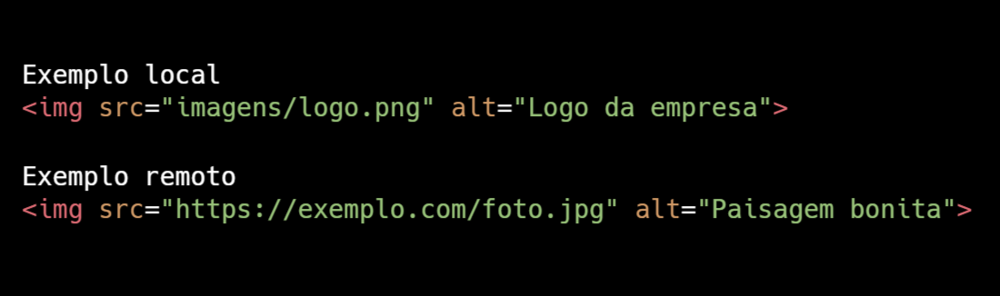
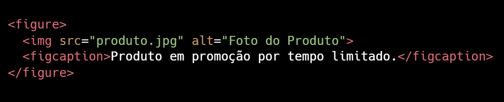
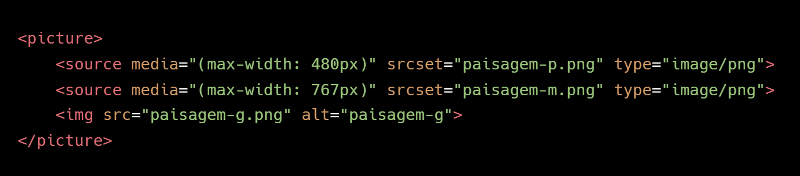

A tag <img> é usada para mostrar uma imagem no site. Ela não tem fechamento (é uma tag auto-fechada) e seu comportamento padrão é inserir uma imagem inline. Temos dois atributos principais.
O atributo src é usado para especificar o caminho da imagem que você deseja exibir. Podendo ser local, ou seja, quando a imagem está baixada no seu projeto ou remoto, quando a imagem está hospedada em outro site.
O atributo alt que é usado para fornecer uma descrição alternativa da imagem, que é importante para acessibilidade e SEO. Caso a imagem não possa ser carregada, o texto alternativo será exibido no lugar da imagem.
Exemplo de como usar a tag <img>:

No exemplo local, o caminho diz que a imagem está na pasta imagens, o nome da imagem é logo e o formato dela é png, já o texto alternativo é logo da empresa.
No exemplo remoto, o caminho diz que a imagem está no endereço http://exemplo.com/foto.jpg e o formato dela é jpg, já o texto alternativo é paisagem bonita.
Outros atributos opcionais são o width / height que define o tamanho da imagem (em pixels ou %). loading que pode ser lazy (carrega sob demanda) ou eager (carrega imediatamente).
Obs: Priori se o uso imagens com licença de uso livre (como Unsplash, Pexels, Pixabay).
Se o dono da imagem tirar o arquivo do ar, ela deixará de aparecer no seu site.
Nomeie os arquivos de forma descritiva: cachorro-feliz.jpg, em vez de img001.jpg.
Figure
A tag <figure> + <figcaption> é utilizado para conteúdo com imagens com legenda semântica. Essa estrutura melhora a semântica e ajuda mecanismos de busca a entenderem melhor o conteúdo. Use quando quiser relacionar uma legenda diretamente a uma imagem. Ideal para conteúdos editoriais, portfólios e artigos.
Exemplo de uso das tags <figure> + <figcaption>:

A tag <figure> cria um bloco de conteúdo visual.
A tag <figcaption> é a legenda da imagem. O conteúdo é associado à imagem e pode ser estilizado com CSS facilmente.
Picture
A tag <picture> é utilizada para deixar as imagens responsivas ou adaptáveis. Permite o navegador carregar imagens diferentes conforme o dispositivo ou tipo de arquivo suportado. Muito útil para otimizar a performance em dispositivos móveis ou para adaptar o conteúdo.
Exemplo de imagem adaptável a diferentes formatos.
Estrutura do HTML dessa imagem:

Nesse caso, se a tela for menor que 480px, o navegador irá carregar o primeiro <source>, se for maior que 480px e menor que 768px irá carregar o segundo <source>, e so for maior que 768px irá carregar a tag <img>.
A tag <source> define as imagens alternativas. O atributo media especifica a condição para usar aquela imagem (como largura máxima da tela). O atributo srcset define o caminho da imagem e o tipo de arquivo.
A tag <img> funciona como fallback, garantindo que a imagem apareça mesmo se o navegador não suportar os outros formatos.
O navegador carrega a melhor imagem disponível de acordo com a largura da tela, formato suportado, ou prioridade definida.
Favicon
O favicon é aquele ícone pequeno que aparece na aba do navegador. Para adicioná-lo, coloque um arquivo .ico ou .png no diretório e adicione esta linha no <head> do seu HTML: